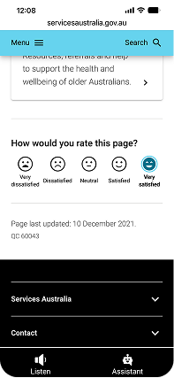
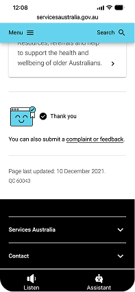
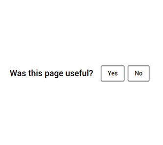
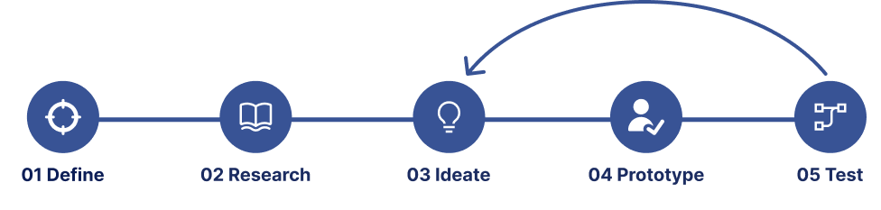
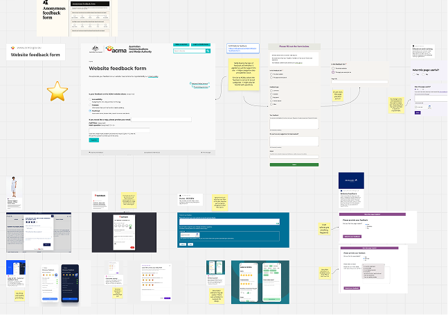

Page Poll Redesign
Overview
This case study explores the redesign of the Page Poll component on the Services Australia website to better support both user feedback and data analysis.
Note: consent to share this information for the portfolio case study has been obtained.
My Role
UI/UX Design
Research
Ideation
Team
Senior Designer
Data Analyst
UX Researchers
Developers
Team Director

Default

Pressed

Confirmed Submission
The problem
The existing Page poll is overly simplistic and binary, limiting its ability to capture meaningful feedback. The new design should aim to reduce cognitive load and capture more nuanced feedback. It should also be adaptable to various content types and page contexts.
Key pain points
-
Binary responses limited nuance
-

Feedback was difficult to interpret and analyse
-

Insights were not actionable for content improvement
Baseline:



How might we redesign the Page Poll to be intuitive for users while enabling more nuanced, actionable feedback for analysis and continuous improvement of web content?
The design process

Research
The core research for this project was based on the Services Australia website analytics and desktop analysis. I analysed examples of page polls elsewhere in different sectors such as retail, along with different types of sentiment scales. I annotated them to draw insights into how they might inform the new design.

Screenshots of desktop analysis
Insights
- Binary feedback is difficult to parse actionable steps from. Would need some kind of sentiment scale
- Feedback options were often accompanied by a free text field, which we could not include
- Many feedback options were embedded as overlays or redirected the user to a separate page
- Needed to distinguish sentiment to be specific to the page the user is on